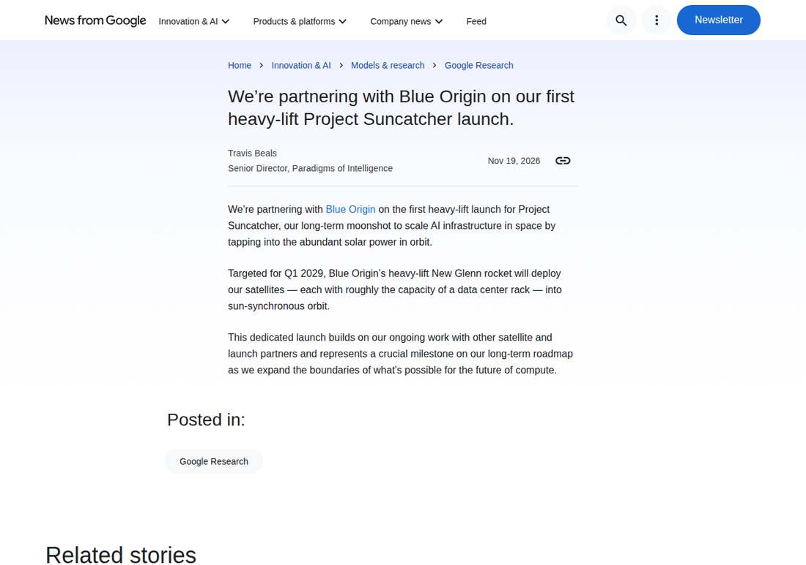

Google Books Blue Origin's New Glenn to Launch AI Satellites in 2029
Google announced on November 19, 2026 that Blue Origin's New Glenn rocket will fly the first dedicated heavy-lift launch for Project Suncatcher in the first quarter of 2029, carrying several solar-powered satellites equipped with Google TPUs into sun-synchronous orbit. Each satellite carries roughly the computing capacity of a data center rack. The agreement is the project's first commitment to a specific vehicle and year; the contract value and satellite count were not disclosed. This flash updates stock 127, which covered the Suncatcher prototype launch on October 1, 2026.

- 01THE PROTOTYPE — On October 1, 2026, Google and Planet Labs launched the first Project Suncatcher prototype aboard a SpaceX rocket. Google said the satellite was operating as expected after establishing contact, and powered its host and TPU trays for early machine-learning tests by October 30.
- 02THE AGREEMENT — On November 19, 2026, Google announced a launch services agreement with Blue Origin for the first dedicated heavy-lift flight for Project Suncatcher, targeted for the first quarter of 2029. Blue Origin confirmed the agreement the same day, and Reuters reported it within hours.
- 03THE MISSION — New Glenn will deploy several solar-powered satellites carrying Google TPUs into sun-synchronous orbit, each with roughly the capacity of a data center rack. The contract value and the number of satellites on the flight were not disclosed.
WHAT HAPPENEDWhat Happened
Google has signed Blue Origin to fly the first dedicated heavy-lift launch for Project Suncatcher, its experiment to run AI computing on satellites powered by sunlight in orbit. Google announced the launch services agreement on November 19, 2026, and Blue Origin confirmed it the same day; Reuters reported the deal within hours. The mission is targeted for the first quarter of 2029, when Blue Origin's New Glenn rocket will carry several computing satellites into sun-synchronous orbit.
Each satellite will carry Google's Tensor Processing Units, the company's in-house AI chips, with computing capacity roughly equal to a rack of servers in a conventional data center. The agreement is the project's first commitment to a specific launch vehicle and a specific year, moving Suncatcher from a research concept toward a scheduled orbital deployment. Neither company disclosed the contract value or how many satellites the 2029 flight will carry.
Suncatcher is Google's long-term attempt to move power-hungry AI computing beyond Earth, using near-constant sunlight in orbit to ease pressure on electricity grids, land and cooling systems on the ground. The first prototype satellite, built with Planet Labs, launched aboard a SpaceX rocket on October 1, 2026, and Google said it was operating as expected after establishing contact. Google's published roadmap calls for two satellites linked together in 2027, followed by the multi-satellite New Glenn deployment in 2029.
WHY IT MATTERSWhy a rocket contract matters for a research project
A launch booking is the first hard date Suncatcher has carried. Until now the project was a paper and a single prototype; a signed agreement with a named vehicle and a target quarter turns it into a program with a schedule other companies must plan around. It also makes Google the only hyperscaler with a signed launch contract for AI compute in orbit, a position its rivals have only discussed.
The economics are still against orbit. A paper in Joule modelling the cost of power in orbit put it at roughly $14,700 per kilowatt-year at today's launch prices, against $570 to $3,000 for a US data center on the ground, with launch as the dominant cost. The 2029 mission is therefore a feasibility test, not a business case: Google has to show the satellites can survive, stay cool and talk to each other before anyone prices orbital compute seriously.
WHAT TO WATCHWhat to watch: New Glenn's return to flight
The schedule depends on a rocket that has not flown since May 2026. A hotfire anomaly at Launch Complex 36 on May 28 damaged the pad badly enough that Blue Origin abandoned the original pad configuration, and its next flight is targeted for January 2027. New Glenn is rated for 45 metric tons to low Earth orbit inside a seven-meter fairing, with a reusable first stage designed for at least 25 flights, but the 2029 date assumes the vehicle reaches a regular cadence first.
The nearer milestones are Google's own: thermal-stress and radiation testing on the prototype, then two satellites exchanging data over laser links in 2027. Watch for technical updates on satellite interconnection and in-orbit computing, any word on constellation size or timing beyond 2029, and progress on New Glenn's flight rate ahead of the launch window.
SIGNAL JUDGMENT — ANALYSISA real date for orbital AI, on a rocket still proving itself
Tokenta Signal's judgment: the booking matters because it converts Suncatcher from a research paper into a dated program, and it hands Blue Origin the flagship future mission New Glenn needs after a difficult year. The substance, though, is still a feasibility test: orbital power costs roughly five to twenty-five times ground power at today's launch prices, and the 2029 date depends on a rocket that has not flown since May. The milestone to trust is the nearer one, two satellites talking over laser links in 2027; if that slips, 2029 slips with it.
WHAT REMAINS UNCERTAINWhat Remains Uncertain
EVIDENCEEvidence

Google announced on November 19, 2026 that Blue Origin's New Glenn rocket will fly the first dedicated heavy-lift launch for Project Suncatcher in the first quarter of 2029, carrying several solar-powered satellites with Google TPUs into sun-synchronous orbit. Each satellite carries roughly the computing capacity of a data center rack. The contract value and satellite count were not disclosed.
PRIMARY SOURCESPrimary Sources
- Google: Google partners with Blue Origin on Project Suncatcher heavy-lift launch
https://blog.google/innovation-and-ai/models-and-research/google-research/blue-origin-project-suncatcher-partnership/ - Reuters: Google picks Bezos' Blue Origin to launch AI computing satellites in 2029
https://www.reuters.com/business/media-telecom/google-picks-bezos-blue-origin-launch-ai-computing-satellites-2029-2026-11-19/
RELATEDRelated Intelligence
- Vera Rubin Is Running in Azure, but the Preview Names No Price, Region, or Date
- Tesla Opens Public Cybercab Rides in Dallas, Its Second City, With a Revised V1.5 Car
- Intuit Sells Mailchimp for $3.68 Billion After Beating Q1 Estimates; Shares Fall 12%
- OVHcloud's Olala Mini 7A1B Weights Go Live on Hugging Face